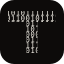

Dense 1s and 0s clipped into a T. Shown at the sizes browsers use. 180px is the phone home screen; 16px is the browser tab.
| FineDensest — closest to the crop you sent. | 16243248180 | |
| MediumA little coarser, so more of it survives shrinking. | 16243248180 | |
| CoarseFewest, largest digits. The most legible when small. |  | 16243248180 |
| Tab companionSame T, bits instead of digits — for 16px only. | 16243248180 |